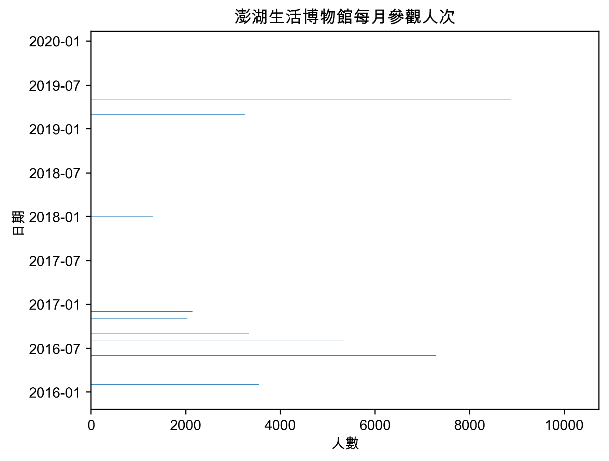
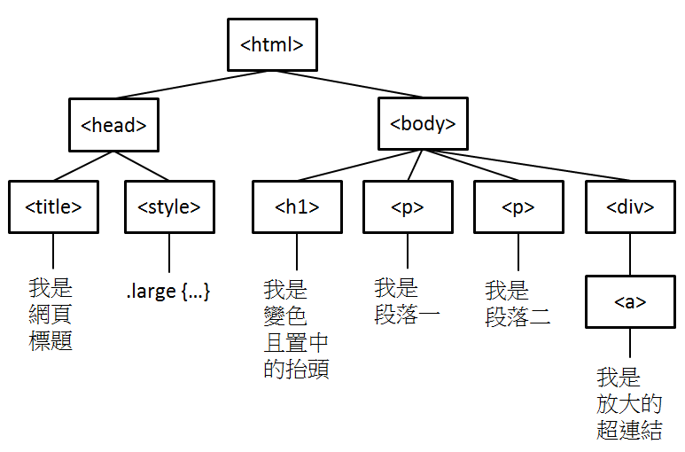

Crawler: 網路資料解析與爬蟲
Table of Contents

1. JSON
1.1. 網路資料分析的兩種類型
- 可直接下載的靜態結構化資料，如 CSV、JSON、XML
- 直接分析網站的線上內容(HTML): 爬蟲(Web Crawler)
1.2. JSON
1.2.1. What is JSON?
- JSON(JavaScript Object Notation，JavaScript 物件表示法)是個以純文字來描述資料的簡單結構，在 JSON 中可以透過特定的格式去儲存任何資料(字串,數字,陣列,物件)，也可以透過物件或陣列來傳送較複雜的資料。1
- JSON 常用於網站上的資料呈現、傳輸 (例如將資料從伺服器送至用戶端，以利顯示網頁)。
- 一旦建立了 JSON 資料，就可以非常簡單的跟其他程式溝通或交換資料，因為 JSON 就只是純文字格式。
1.2.2. JSON 的優點
- 相容性高
- 格式容易瞭解，閱讀及修改方便
- 支援許多資料格式 (number,string,booleans,nulls,array,associative array)
- 許多程式都支援函式庫讀取或修改 JSON 資料
- NoSQL Database
1.2.3. JSON 結構
- 物件: {}
- 陣列: []
1.2.4. JSON 支援的資料格式
- 字串 (string)，要以雙引號括起來:
- {“name”: “Mike”}
- {“name”: “Mike”}
- 數值 (number)
- {“age”: 25}
- {“age”: 25}
- 布林值 (boolean)
- {“pass”: True}
- {“pass”: True}
- 空值 (null)
- {“middlename”: null}
- {“middlename”: null}
- 物件 (object)
- 陣列 (array)
1.2.5. JSON 物件
- 格式
- key 只能是字串，也一定要加上雙引號
1: { 2: "key1": value1, 3: "key2": value2, 4: ...... 5: "keyN": valueN 6: }
- 範例 1
1: { 2: "id": 1, 3: "name": "Jamees, Yen", 4: "age": 19, 5: "gender": "M", 6: "hobby": ["music", "programming"] 7: }
- 範例 2
1: { 2: "id": 382192 3: "name": "Jamees, Yen", 4: "age": 19, 5: "gender": "M", 6: "exams": [ 7: { "title": "期中考", 8: "chinese": 85, 9: "math": 98, 10: "englihs": 92 11: }, 12: { "title": "期末考", 13: "chinese": 81, 14: "math": 92, 15: "englihs": 97 16: } 17: ], 18: "hobby": ["music", "programming"] 19: }
1.2.6. JSON 轉 PANDAS dataFrame
1: from pandas.io.json import json_normalize 2: 3: df = json_normalize( list of dict ) 4: print(df.head(3))
1.3. JSON 實作範例
1.3.1. 實作 1: 國際主要國家貨幣每月匯率概況
1.3.1.1. 下載 JSON
1: # -*- coding: utf-8 -*- 2: import requests 3: 4: json_url = 'https://quality.data.gov.tw/dq_download_json.php?nid=11339&md5_url=f2fdbc21603c55b11aead08c84184b8f' 5: response = requests.get(json_url) 6: print(response) 7: jsonRes = response.json() 8: print(type(jsonRes)) 9: 10: import json 11: print(jsonRes[:1]) 12: print(json.dumps(jsonRes[:2], indent = 4, ensure_ascii=False))
/Users/letranger/Library/Python/3.9/lib/python/site-packages/urllib3/__init__.py:34: NotOpenSSLWarning: urllib3 v2 only supports OpenSSL 1.1.1+, currently the 'ssl' module is compiled with 'LibreSSL 2.8.3'. See: https://github.com/urllib3/urllib3/issues/3020
warnings.warn(
<Response [200]>
<class 'list'>
[{'日期': '20201005', '美元／新台幣': '29.02', '人民幣／新台幣': '4.29882', '歐元／美元': '1.17405', '美元／日幣': '105.645', '英鎊／美元': '1.2947', '澳幣／美元': '0.71775', '美元／港幣': '7.75005', '美元／人民幣': '6.7507', '美元／南非幣': '16.4019', '紐幣／美元': '0.66435'}]
[
{
"日期": "20201005",
"美元／新台幣": "29.02",
"人民幣／新台幣": "4.29882",
"歐元／美元": "1.17405",
"美元／日幣": "105.645",
"英鎊／美元": "1.2947",
"澳幣／美元": "0.71775",
"美元／港幣": "7.75005",
"美元／人民幣": "6.7507",
"美元／南非幣": "16.4019",
"紐幣／美元": "0.66435"
},
{
"日期": "20201006",
"美元／新台幣": "28.96",
"人民幣／新台幣": "4.300705",
"歐元／美元": "1.17735",
"美元／日幣": "105.555",
"英鎊／美元": "1.297",
"澳幣／美元": "0.7156",
"美元／港幣": "7.75005",
"美元／人民幣": "6.7338",
"美元／南非幣": "16.63735",
"紐幣／美元": "0.66365"
}
]
1.3.1.2. 輸出日期與匯率
1: print('日期', "\t\t", '美元/新台幣') 2: print('====', "\t\t", '===========') 3: for item in jsonRes[:10]: 4: print(item['日期'], "\t", item['美元／新台幣'])
日期 美元/新台幣 ==== =========== 20201005 29.02 20201006 28.96 20201007 28.965 20201008 28.966 20201012 28.909 20201013 28.92 20201014 28.952 20201015 28.96 20201016 28.979 20201019 28.95
1.3.1.3. 製圖
1: # -*- coding: utf-8 -*- 2: import matplotlib.pyplot as plt 3: 4: plt.figure(figsize=(10, 6)) 5: 6: plt.rcParams['font.sans-serif'] = ['Arial Unicode MS'] # 步驟一（替換系統中的字型，這裡用的是Mac OSX系統） 7: plt.rcParams['axes.unicode_minus'] = False # 步驟二（解決座標軸負數的負號顯示問題） 8: 9: # 提取日期和美元/新台幣的數據 10: dates = [item['日期'] for item in jsonRes] 11: exchange_rates = [float(item['美元／新台幣']) for item in jsonRes] 12: 13: # 繪製折線圖 14: plt.figure(figsize=(10, 6)) 15: plt.plot(dates, exchange_rates, marker='o', linestyle='-') 16: 17: # 設置圖形標籤和標題 18: plt.xlabel('日期') 19: plt.ylabel('美元／新台幣') 20: plt.title('美元／新台幣匯率走勢') 21: 22: # 旋轉x軸上的日期標籤，以避免重疊 23: plt.xticks(rotation=45, ha='right') 24: 25: # 顯示圖形 26: plt.tight_layout() 27: plt.savefig('images/json-plot.png', dpi=300)

Figure 1: 美元／新台幣匯率走勢
1.3.2. 實作 2: 澎湖生活博物館每月參觀人次統計資料
1: #coding:utf-8 2: import matplotlib.pyplot as plt 3: # 解決中文問題 4: plt.rcParams['font.sans-serif'] = ['Arial Unicode MS'] # 步驟一（替換系統中的字型，這裡用的是Mac OSX系統） 5: plt.rcParams['axes.unicode_minus'] = False # 6: 7: import requests 8: import pandas as pd 9: from datetime import datetime 10: 11: json_url = 'http://opendataap2.penghu.gov.tw/resource/files/2020-01-12/eaa641fc3af66277e60b13201ca11232.json' 12: 13: response = requests.get(json_url) 14: jsonRes = response.json() 15: 16: year = [str(int(i['年度'])+1911) for i in jsonRes] 17: month = [i['月份'] for i in jsonRes] 18: visitor = [int(i['人數']) for i in jsonRes] 19: 20: dates = [x+'/'+y for x, y in zip(year, month)] 21: 22: from datetime import datetime 23: dates = [datetime.strptime(x, '%Y/%m').date() for x in dates] 24: 25: import matplotlib.pyplot as plt 26: plt.rcParams['font.sans-serif'] = ['Arial Unicode MS'] # 步驟一（替換系統中的字型，這裡用的是Mac OSX系統） 27: plt.rcParams['axes.unicode_minus'] = False # 步驟二（解決座標軸負數的負號顯示問題） 28: 29: plt.clf() 30: plt.barh(dates, visitor, height=0.5) 31: plt.xticks(rotation=0, fontsize=10) 32: plt.yticks(rotation=0, fontsize=10) 33: plt.xlabel('人數') 34: plt.ylabel('日期') 35: plt.title('澎湖生活博物館每月參觀人次') 36: plt.savefig('images/jsonBar.png', dpi=300, bbox_inches='tight')

Figure 2: 參觀人數
1.4. [課堂練習]線上 JSON 讀取 TNFSH
- [注意]如果 JSON 的資料下載發生錯誤，可以試著將 URL 由’https://’改為’http://’
請上網查詢台南市各區 WIFI 熱點數量，依行政區統計，繪製類似以下圖形，儘可能加上統計圖表所需元素並加以美化
Figure 3: 台南市各區熱點分佈
2. HTML
2.1. What is HTML
- 政府資料開放平台
- 超文本標記語言（HyperText Markup Language）是一種用於建立網頁的標準標記語言。HTML 是一種基礎技術，常與 CSS、JavaScript 一起被眾多網站用於設計網頁、網頁應用程式以及行動應用程式的使用者介面。2
- HTML 元素是構建網站的基石。HTML 允許嵌入圖像與物件，並且可以用於建立互動式表單，它被用來結構化資訊——例如標題、段落和列表等等，也可用來在一定程度上描述文件的外觀和語意。2
- HTML 的語言形式為<>包圍的 HTML 元素（如<html>），瀏覽器使用 HTML 標籤和指
令碼來詮釋網頁內容，但不會將它們顯示在頁面上。 2 - 網頁就是由各式標籤 (tag) 所組成的階層式文件，例如:
- <title>我是網頁標題</title>
- <h1 class=“large”>我是變色且置中的抬頭</h1>
- <p id=“p1”>我是段落一</p>
- <title>我是網頁標題</title>
2.2. HTML 範例
2.2.1. HTML code
1: <html> 2: <head> 3: <title>我是網頁標題</title> 4: <style> 5: .large { 6: color:blue; 7: text-align: center; 8: } 9: </style> 10: </head> 11: <body> 12: <h1 class="large">我是變色且置中的抬頭</h1> 13: <p id="p1">我是段落一</p> 14: <p id="p2" style="">我是段落二</p> 15: <div><a href='http://blog.castman.net' style="font-size:200%;">我是放大的超連結</a></div> 16: </body> 17: </html>
2.2.1.1. 執行結果
2.2.2. HTML tree

Figure 4: HTML tree
- HTML 文件內不同的標籤 (例如 <title>, <h1>, <p>, <a>, <div>)
- 不同的標籤有著不同的語義，表示建構網頁用的不同元件，且標籤可以有各種屬性 (例如 id, class, style 等通用屬性, 或 href 等專屬屬性)，
- <div>是 division 這個單字取前面三個字母來表示，division 是區分的意思，div 標籤主要的功能就是在形成一個個的區塊，方便網頁排版美化3。例如:
1: <div style="background-color:grey;"> 2: <p>今天是第7天的介紹，div範例程式</p> 3: <p>今天是第7天的介紹，div範例程式</p> 4: </div>
其結果為:
今天是第7天的介紹，div範例程式
今天是第7天的介紹，div範例程式
- 我們可以用標籤 + 屬性去定位資料所在的區塊並取得資料。4
3. 網路爬蟲
上述的 html 程式碼只能透過瀏覽器來解析並呈現結果，如果我們想跳過瀏覽器，直接以程式來抓取網頁上的資訊，就要透過爬蟲程式。
3.1. 爬蟲精神：將程式模仿成一般 user
3.1.1. 原則
- 要抓網路資料，就要先仔細觀察網頁內容
- 要儘量欺騙網站自己是 browser
3.1.2. 實作範例: 取得 HTML 資料
3.1.2.1. 第一版: 以 urllib 模組來抓取 HTML 資料
urllib.request 是一個用來從 URLs (Uniform Resource Locators)取得資料的 Python 模組。它提供一個了非常簡單的介面能接受多種不同的協議(protocol, 如 http, ftp)， urlopen 函數。
1: # 抓取PTT電影版header 2: import urllib.request as req 3: url = "https://www.ptt.cc/bbs/Movie/index.html" 4: 5: with req.urlopen(url) as response: 6: data = response.read().decode("utf-8") 7: print(data)
結果得到如下錯誤訊息:
1: urllib.error.HTTPError: HTTP Error 403: Forbidden
被拒絕原因：這隻程式的行為不像一般使用者，被網站伺服器拒絕。403 Forbidden 是 HTTP 協議中的一個 HTTP 狀態碼（Status Code）。可以簡單的理解為沒有權限訪問此站，服務器收到請求但拒絕提供服務5。
3.1.2.2. 第二版:加入 headers(純文字)
1: import urllib.request as req 2: url = "https://www.ptt.cc/bbs/Movie/index.html" 3: # 幫request加上一個header 4: request = req.Request(url, headers = { 5: "User-Agent":"Mozilla/5.0 (Macintosh; Intel Mac OS X 10.14; rv:72.0) Gecko/20100101 Firefox/72.0" 6: }) 7: 8: with req.urlopen(request) as response: 9: data = response.read().decode("utf-8") 10: print('所取得的資料型態：',type(data)) 11: print('===得到的部份HTML內容===\n', data[2651:3500])
所取得的資料型態： <class 'str'> ===得到的部份HTML內容=== <div class="mark"></div> </div> </div> <div class="r-ent"> <div class="nrec"><span class="hl f2">5</span></div> <div class="title"> <a href="/bbs/movie/M.1709626126.A.AAB.html">[ 好雷] 時空永恆的愛戀</a> </div> <div class="meta"> <div class="author">tilwemeet</div> <div class="article-menu"> <div class="trigger">⋯</div> <div class="dropdown"> <div class="item"><a href="/bbs/movie/search?q=thread%3A%5B++%E5%A5%BD%E9%9B%B7%5D+%E6%99%82%E7%A9%BA%E6%B0%B8%E6%81%86%E7%9A%84%E6%84%9B%E6%88%80">搜尋同標題文章</a></div> <div class="item"><a href="/bbs/movie/search?q=author%3Atilwemeet">搜尋看板內 tilwemeet 的文章</a></div> </div> </div> <div class="date"> 3/05</div> <div class="mark"></div> </div> </div
可以發現抓取下來的結果都是字串型態，不太容易進一步擷取所需資訊。例如，當我們想抓取所有看板中的標題，只使用字串所提供的一些函式就很難完成工作。
3.2. BeautifulSoup
3.2.1. BeautifulSoup4 簡介
- BeautifulSoup4 和 lxml 一樣，Beautiful Soup 也是一個 HTML/XML 的解析器，
- 主要的功能是解析和提取 HTML/XML 資料。
3.2.2. 實作：解析 HTML 資料內容
3.2.2.1. 安裝解析 HTML 所需套件(安裝套件名稱後面有 4)
1: pip install beautifulsoup4
3.2.2.2. 第三版: 以 BS4 解析 HTML
1: import urllib.request as req 2: url = "https://www.ptt.cc/bbs/Japan_Travel/index.html" 3: # 幫request加上一個header 4: request = req.Request(url, headers = { 5: "User-Agent":"Mozilla/5.0 (Macintosh; Intel Mac OS X 10.14; rv:72.0) Gecko/20100101 Firefox/72.0" 6: }) 7: 8: with req.urlopen(request) as response: 9: data = response.read() 10: 11: import bs4 12: doc = bs4.BeautifulSoup(data,"html.parser") 13: print(type(doc)) 14: print(doc.prettify()[:4000]) 15:
<class 'bs4.BeautifulSoup'>
<!DOCTYPE html>
<html>
<head>
<meta charset="utf-8"/>
<meta content="width=device-width, initial-scale=1" name="viewport"/>
<title>
看板 Japan_Travel 文章列表 - 批踢踢實業坊
</title>
<link href="//images.ptt.cc/bbs/v2.27/bbs-common.css" rel="stylesheet" type
="text/css"/>
<link href="//images.ptt.cc/bbs/v2.27/bbs-base.css" media="screen" rel="stylesheet" type="text/css"/>
<link href="//images.ptt.cc/bbs/v2.27/bbs-custom.css" rel="stylesheet" type="text/css"/>
<link href="//images.ptt.cc/bbs/v2.27/pushstream.css" media="screen" rel="stylesheet" type="text/css"/>
<link href="//images.ptt.cc/bbs/v2.27/bbs-print.css" media="print" rel="stylesheet" type="text/css"/>
</head>
<body>
<div id="topbar-container">
<div class="bbs-content" id="topbar">
<a href="/bbs/" id="logo">
批踢踢實業坊
</a>
<span>
›
</span>
<a class="board" href="/bbs/Japan_Travel/index.html">
<span class="board-label">
看板
</span>
Japan_Travel
</a>
<a class="right small" href="/about.html">
關於我們
</a>
<a class="right small" href="/contact.html">
聯絡資訊
</a>
</div>
</div>
<div id="main-container">
<div id="action-bar-container">
<div class="action-bar">
<div class="btn-group btn-group-dir">
<a class="btn selected" href="/bbs/Japan_Travel/index.html">
看板
</a>
<a class="btn" href="/man/Japan_Travel/index.html">
精華區
</a>
</div>
<div class="btn-group btn-group-paging">
<a class="btn wide" href="/bbs/Japan_Travel/index1.html">
最舊
</a>
<a class="btn wide" href="/bbs/Japan_Travel/index7965.html">
‹ 上頁
</a>
<a class="btn wide disabled">
下頁 ›
</a>
<a class="btn wide" href="/bbs/Japan_Travel/index.html">
最新
</a>
</div>
</div>
</div>
<div class="r-list-container action-bar-margin bbs-screen">
<div class="search-bar">
<form action="search" id="search-bar" type="get">
<input class="query" name="q" placeholder="搜尋文章⋯" type="text" value=""/>
</form>
</div>
<div class="r-ent">
<div class="nrec">
<span class="hl f2">
9
</span>
</div>
<div class="title">
<a href="/bbs/Japan_Travel/M.1709715202.A.9ED.html">
[問題] 京都住宿請益
</a>
</div>
<div class="meta">
<div class="author">
poi9430
</div>
<div class="article-menu">
<div class="trigger">
⋯
</div>
<div class="dropdown">
<div class="item">
<a href="/bbs/Japan_Travel/search?q=thread%3A%5B%E5%95%8F%E9%A1%8C%5D+%E4%BA%AC%E9%83%BD%E4%BD%8F%E5%AE%BF%E8%AB%8B%E7%9B%8A">
搜尋同標題文章
</a>
</div>
<div class="item">
<a href="/bbs/Japan_Travel/search?q=author%3Apoi9430">
搜尋看板內 poi9430 的文章
</a>
</div>
</div>
</div>
<div class="date">
3/06
</div>
<div class="mark">
</div>
</div>
</div>
<div class="r-ent">
<div class="nrec">
<span class="hl f3">
17
</span>
</div>
<div class="title">
<a href="/bbs/Japan_Travel/M.1709718584.A.E96.html">
[問題] 沖繩親子遊首衝安排請益
</a>
</div>
<div class="meta">
<div class="author">
newsnotti
</div>
<div class="article-menu">
<div class="trigger">
⋯
</div>
<div class="dropdown">
<div class="item">
<a href="/bbs/Japan_Travel/search?q=thread%3A%5B%E5%95%8F%E9%A1%8C%5D+%E6%B2%96%E7%B9%A9%E8%A6%AA%E5%AD%90%E9%81%8A%E9%A6%96%E8%A1%9D%E5%AE%89%E6%8E%92%E8%AB%8B%E7%9B%8A">
搜尋同標題文章
</a>
</div>
<div class="item">
<a href="/bbs/Japan_Travel/search?q=author%3Anewsnotti">
搜尋看板內 newsnotti 的文章
</a>
</div>
</div>
</div>
<div class="date">
3/06
</div>
<div class="mark">
</div>
</di
3.3. Beautifulsoup 解析器
現在我們可以進一步來研究 bs4 的玩法
在上面的語句中，我們使用了一個 html.parser。 這是一個解析器，在構造 BeautifulSoup 物件的時候，需要用到解析器。BeautifulSoup 支援 python 內建的解析器和少數第三方解析器。6:
Figure 5: Parsers 比較
- 一般來說，對於速度或效能要求不太高的話，也可以使用 html5lib 來進行解析；如果較在乎效能則建議使用 lxml 來進行解析。
如果要換用 html5lib，則要先安裝:
1: pip install html5lib
接下來更換 parser:
批踢踢實業坊›看板 PC_Shopping
1: import urllib.request as req 2: url = "https://www.ptt.cc/bbs/PC_Shopping/index.html" 3: # 幫request加上一個header 4: request = req.Request(url, headers = { 5: "User-Agent":"Mozilla/5.0 (Macintosh; Intel Mac OS X 10.14; rv:72.0) Gecko/20100101 Firefox/72.0" 6: }) 7: 8: with req.urlopen(request) as response: 9: data = response.read().decode("utf-8") 10: 11: import bs4 12: root = bs4.BeautifulSoup(data,"html5lib") 13: 14: # 依序執行丁列程式 15: print(type(root)) #取得的資料型態變成是bs4的物件，而非字串 16: print(type(root.prettify())) #可以先美化輸出，方便查看HTML結構 17: print(root.prettify()[3000:])
請自行執行、比對解析後的結果
3.4. BeautifulSoup 的方法7
| 方法 | 說明 |
|---|---|
| select() | 以 CSS 選擇器的方式尋找指定的 tag。 |
| find_all() | 以所在的 tag 位置，尋找內容裡所有指定的 tag。 |
| find() | 以所在的 tag 位置，尋找第一個找到的 tag。 |
| find_parents() | 以所在的 tag 位置，尋找父層所有指定的 tag 或第一個找到的 tag。 |
| find_parent() | |
| find_next_siblings() | 以所在的 tag 位置，尋找同一層後方所有指定的 tag 或第一個找到的 tag。 |
| find_next_sibling() | |
| find_previous_siblings() | 以所在的 tag 位置，尋找同一層前方所有指定的 tag 或第一個找到的 tag。 |
| find_previous_sibling() | |
| find_all_next() | 以所在的 tag 位置，尋找後方內容裡所有指定的 tag 或第一個找到的 tag。 |
| find_next() | |
| find_all_previous() | 所在的 tag 位置，尋找前方內容裡所有指定的 tag 或第一個找到的 tag。 |
| find_previous() |
4. BS4:開始爬
在[第三版: 以 BS4 解析 HTML]中，我們以 bs4.BeautifulSoup()將下載的 html 解析成 BS4 的物件，現在開始我們可以利用 BS4 來探索、抓取 html 的內容。
doc = bs4.BeautifulSoup(data,"html.parser")
4.1. bs4.tag
最簡單的方式是利用如下的格式取得 bs4 物件中的 tag
bs4.tag
4.1.1. <title>
例如，下例為取出 html 程式碼中的標題 tag
1: print(doc.title)
<title>看板 Japan_Travel 文章列表 - 批踢踢實業坊</title>
看的出這是個文字屬性的 tag，所以我們可以進一步以 text 或 string 取得其中的字串
1: print(doc.title.text) 2: print(doc.title.string)
看板 Japan_Travel 文章列表 - 批踢踢實業坊 看板 Japan_Travel 文章列表 - 批踢踢實業坊
4.1.2. <div>
繼續取出 html 中的<div>tag，結果如下
1: print(doc.div)
<div id="topbar-container"> <div class="bbs-content" id="topbar"> <a href="/bbs/" id="logo">批踢踢實業坊</a> <span>›</span> <a class="board" href="/bbs/Japan_Travel/index.html"><span class="board-label">看板 </span>Japan_Travel</a> <a class="right small" href="/about.html">關於我們</a> <a class="right small" href="/contact.html">聯絡資訊</a> </div> </div>
聰明的你應該已經發現，雖然 html 中的非常多組的<div>，但是目前我們就只抓取到其中的 第一組 <div>。
4.1.3. <a>
依此類推，我們還能由取得的 doc.div 繼續抓到裡面的第一組<a> tag
1: print(doc.div.a)
<a href="/bbs/" id="logo">批踢踢實業坊</a>
tag <a>是一個超連結(hyperlink)，除了’href’和’id’，還有’target’, ’download’, ’ref’…等屬性8。我們可以透過以下的方式取得 tag 中的相關內容
1: print(doc.div.a.text) 2: print(doc.div.a['id']) 3: print(doc.div.a['href'])
批踢踢實業坊 logo /bbs/
4.2. find
BS4 的 find()可以較彈性的找出 html 中不同類型的<tag>，find 有兩個常用的用法9：
4.2.1. 直接接標籤名稱
4.2.1.1. Soup.find(‘tag’)
可以直接找到第一個 a 標籤的元素，例如
1: print(doc.find('a'))
<a href="/bbs/" id="logo">批踢踢實業坊</a>
1: print(doc.find('div'))
<div id="topbar-container"> <div class="bbs-content" id="topbar"> <a href="/bbs/" id="logo">批踢踢實業坊</a> <span>›</span> <a class="board" href="/bbs/Japan_Travel/index.html"><span class="board-label">看板 </span>Japan_Travel</a> <a class="right small" href="/about.html">關於我們</a> <a class="right small" href="/contact.html">聯絡資訊</a> </div> </div>
4.2.2. 指定屬性名稱用鍵值方式對應
4.2.2.1. Soup.find(class_=’類別名稱’)
可以找到第一個 class 為’abc’的元素，要注意的是因為 python 中 class 是保留字，所以要用 class_才能表達
1: qq = doc.find(class_='r-ent') 2: print(qq)
<div class="r-ent"> <div class="nrec"><span class="hl f2">9</span></div> <div class="title"> <a href="/bbs/Japan_Travel/M.1709715202.A.9ED.html">[問題] 京都住宿請益</a> </div> <div class="meta"> <div class="author">poi9430</div> <div class="article-menu"> <div class="trigger">⋯</div> <div class="dropdown"> <div class="item"><a href="/bbs/Japan_Travel/search?q=thread%3A%5B%E5%95%8F%E9%A1%8C%5D+%E4%BA%AC%E9%83%BD%E4%BD%8F%E5%AE%BF%E8%AB%8B%E7%9B%8A">搜尋同標題文章</a></div> <div class="item"><a href="/bbs/Japan_Travel/search?q=author%3Apoi9430">搜尋看板內 poi9430 的文章</a></div> </div> </div> <div class="date"> 3/06</div> <div class="mark"></div> </div> </div>
4.2.2.2. Soup.find(id=’id 名稱’)
可以找到第一個 id 為’id 名稱’的元素
1: qq = doc.find(id='topbar') 2: print(qq)
<div class="bbs-content" id="topbar"> <a href="/bbs/" id="logo">批踢踢實業坊</a> <span>›</span> <a class="board" href="/bbs/Japan_Travel/index.html"><span class="board-label">看板 </span>Japan_Travel</a> <a class="right small" href="/about.html">關於我們</a> <a class="right small" href="/contact.html">聯絡資訊</a> </div>
4.2.2.3. Soup.find(type=’類型名稱’)
可以找到第一個 type 為’類型名稱’的元素
1: qq = doc.find(type='get') 2: print(qq)
<form action="search" id="search-bar" type="get"> <input class="query" name="q" placeholder="搜尋文章⋯" type="text" value=""/> </form>
4.2.2.4. 複合搜尋
上述的 doc.find(class_=’r-ent’)找出了以下的一整個“r-ent”tag
<div class="r-ent"> <div class="nrec"><span class="hl f2">9</span></div> <div class="title"> <a href="/bbs/Japan_Travel/M.1709715202.A.9ED.html">[問題] 京都住宿請益</a> </div> <div class="meta"> <div class="author">poi9430</div> <div class="article-menu"> <div class="trigger">⋯</div> <div class="dropdown"> <div class="item"><a href="/bbs/Japan_Travel/search?q=thread%3A%5B%E5%95%8F%E9%A1%8C%5D+%E4%BA%AC%E9%83%BD%E4%BD%8F%E5%AE%BF%E8%AB%8B%E7%9B%8A">搜尋同標題文章</a></div> <div class="item"><a href="/bbs/Japan_Travel/search?q=author%3Apoi9430">搜尋看板內 poi9430 的文章</a></div> </div> </div> <div class="date"> 3/06</div> <div class="mark"></div> </div> </div>
這個’r-ent’<div>的結構大致如下:
透過串接的 find()，我們可以進一步搜尋’r-ent’下的其他 tag，如
例 1
1: print(doc.find(class_='r-ent').find(class_='title'))
<div class="title"> <a href="/bbs/Japan_Travel/M.1709715202.A.9ED.html">[問題] 京都住宿請益</a> </div>
例 2
1: print(doc.find(class_='r-ent').find(class_='title').find('a'))
<a href="/bbs/Japan_Travel/M.1709715202.A.9ED.html">[問題] 京都住宿請益</a>
例 3
1: print(doc.find(class_='r-ent').find(class_='title').find('a').text)
[問題] 京都住宿請益
4.3. find_all
find()只會傳回第一個符合條件的資料，我們可以使用 find_all 找出所有特定的 HTML 標籤節點，再以 Python 的迴圈來依序輸出每個超連結的文字10：
1: QQ = doc.find_all(class_='r-ent') 2: print(QQ)
[<div class="r-ent"> <div class="nrec"><span class="hl f2">9</span></div> <div class="title"> <a href="/bbs/Japan_Travel/M.1709715202.A.9ED.html">[問題] 京都住宿請益</a> </div> <div class="meta"> <div class="author">poi9430</div> <div class="article-menu"> <div class="trigger">⋯</div> <div class="dropdown"> <div class="item"><a href="/bbs/Japan_Travel/search?q=thread%3A%5B%E5%95%8F%E9%A1%8C%5D+%E4%BA%AC%E9%83%BD%E4%BD%8F%E5%AE%BF%E8%AB%8B%E7%9B%8A">搜尋同標題文章</a></div> <div class="item"><a href="/bbs/Japan_Travel/search?q=author%3Apoi9430">搜尋看板內 poi9430 的文章</a></div> </div> </div> <div class="date"> 3/06</div> <div class="mark"></div> </div> </div>, <div class="r-ent"> <div class="nrec"><span class="hl f3">17</span></div> <div class="title"> <a href="/bbs/Japan_Travel/M.1709718584.A.E96.html">[問題] 沖繩親子遊首衝安排請益</a> </div> <div class="meta"> <div class="author">newsnotti</div> <div class="article-menu"> <div class="trigger">⋯</div> <div class="dropdown"> <div class="item"><a href="/bbs/Japan_Travel/search?q=thread%3A%5B%E5%95%8F%E9%A1%8C%5D+%E6%B2%96%E7%B9%A9%E8%A6%AA%E5%AD%90%E9%81%8A%E9%A6%96%E8%A1%9D%E5%AE%89%E6%8E%92%E8%AB%8B%E7%9B%8A">搜尋同標題文章</a></div> <div class="item"><a href="/bbs/Japan_Travel/search?q=author%3Anewsnotti">搜尋看板內 newsnotti 的文章</a></div> </div> </div> <div class="date"> 3/06</div> <div class="mark"></div> </div> </div>, <div class="r-ent"> <div class="nrec"><span class="hl f2">7</span></div> <div class="title"> <a href="/bbs/Japan_Travel/M.1709719948.A.882.html">Re: [問題] 請問最近札幌帝王蟹價格？</a> </div> <div class="meta"> <div class="author">grlie8027</div> <div class="article-menu"> <div class="trigger">⋯</div> <div class="dropdown"> <div class="item"><a href="/bbs/Japan_Travel/search?q=thread%3A%5B%E5%95%8F%E9%A1%8C%5D+%E8%AB%8B%E5%95%8F%E6%9C%80%E8%BF%91%E6%9C%AD%E5%B9%8C%E5%B8%9D%E7%8E%8B%E8%9F%B9%E5%83%B9%E6%A0%BC%EF%BC%9F">搜尋同標題文章</a></div> <div class="item"><a href="/bbs/Japan_Travel/search?q=author%3Agrlie8027">搜尋看板內 grlie8027 的文章</a></div> </div> </div> <div class="date"> 3/06</div> <div class="mark"></div> </div> </div>, <div class="r-ent"> <div class="nrec"><span class="hl f3">16</span></div> <div class="title"> <a href="/bbs/Japan_Travel/M.1709724598.A.77E.html">[問題] IT216飛羽田的疑問</a> </div> <div class="meta"> <div class="author">Yijhen0525</div> <div class="article-menu"> <div class="trigger">⋯</div> <div class="dropdown"> <div class="item"><a href="/bbs/Japan_Travel/search?q=thread%3A%5B%E5%95%8F%E9%A1%8C%5D+IT216%E9%A3%9B%E7%BE%BD%E7%94%B0%E7%9A%84%E7%96%91%E5%95%8F">搜尋同標題文章</a></div> <div class="item"><a href="/bbs/Japan_Travel/search?q=author%3AYijhen0525">搜尋看板內 Yijhen0525 的文章</a></div> </div> </div> <div class="date"> 3/06</div> <div class="mark"></div> </div> </div>, <div class="r-ent"> <div class="nrec"><span class="hl f2">3</span></div> <div class="title"> <a href="/bbs/Japan_Travel/M.1709725167.A.3DC.html">[問題] 小豆島高松-土庄3/10-24航班時間變更</a> </div> <div class="meta"> <div class="author">chiao650617</div> <div class="article-menu"> <div class="trigger">⋯</div> <div class="dropdown"> <div class="item"><a href="/bbs/Japan_Travel/search?q=thread%3A%5B%E5%95%8F%E9%A1%8C%5D+%E5%B0%8F%E8%B1%86%E5%B3%B6%E9%AB%98%E6%9D%BE-%E5%9C%9F%E5%BA%843%2F10-24%E8%88%AA%E7%8F%AD%E6%99%82%E9%96%93%E8%AE%8A%E6%9B%B4">搜尋同標題文章</a></div> <div class="item"><a href="/bbs/Japan_Travel/search?q=author%3Achiao650617">搜尋看板內 chiao650617 的文章</a></div> </div> </div> <div class="date"> 3/06</div> <div class="mark"></div> </div> </div>, <div class="r-ent"> <div class="nrec"></div> <div class="title"> <a href="/bbs/Japan_Travel/M.1709725566.A.401.html">[住宿] 佐賀太良町・有明海旁美食海鮮滿滿平浜荘</a> </div> <div class="meta"> <div class="author">peikie</div> <div class="article-menu"> <div class="trigger">⋯</div> <div class="dropdown"> <div class="item"><a href="/bbs/Japan_Travel/search?q=thread%3A%5B%E4%BD%8F%E5%AE%BF%5D+%E4%BD%90%E8%B3%80%E5%A4%AA%E8%89%AF%E7%94%BA%E3%83%BB%E6%9C%89%E6%98%8E%E6%B5%B7%E6%97%81%E7%BE%8E%E9%A3%9F%E6%B5%B7%E9%AE%AE%E6%BB%BF%E6%BB%BF%E5%B9%B3%E6%B5%9C%E8%8D%98">搜尋同標題文章</a></div> <div class="item"><a href="/bbs/Japan_Travel/search?q=author%3Apeikie">搜尋看板內 peikie 的文章</a></div> </div> </div> <div class="date"> 3/06</div> <div class="mark"></div> </div> </div>, <div class="r-ent"> <div class="nrec"><span class="hl f3">16</span></div> <div class="title"> <a href="/bbs/Japan_Travel/M.1709725647.A.9A6.html">[資訊] 台灣虎航 tigerclub會員限定優惠活動</a> </div> <div class="meta"> <div class="author">yhls</div> <div class="article-menu"> <div class="trigger">⋯</div> <div class="dropdown"> <div class="item"><a href="/bbs/Japan_Travel/search?q=thread%3A%5B%E8%B3%87%E8%A8%8A%5D+%E5%8F%B0%E7%81%A3%E8%99%8E%E8%88%AA+tigerclub%E6%9C%83%E5%93%A1%E9%99%90%E5%AE%9A%E5%84%AA%E6%83%A0%E6%B4%BB%E5%8B%95">搜尋同標題文章</a></div> <div class="item"><a href="/bbs/Japan_Travel/search?q=author%3Ayhls">搜尋看板內 yhls 的文章</a></div> </div> </div> <div class="date"> 3/06</div> <div class="mark"></div> </div> </div>, <div class="r-ent"> <div class="nrec"><span class="hl f2">1</span></div> <div class="title"> (本文已被刪除) [gragragra] </div> <div class="meta"> <div class="author">-</div> <div class="article-menu"> </div> <div class="date"> 3/06</div> <div class="mark"></div> </div> </div>, <div class="r-ent"> <div class="nrec"><span class="hl f2">4</span></div> <div class="title"> <a href="/bbs/Japan_Travel/M.1694279303.A.1CE.html">[公告] 日本旅遊板板規 112.09.17 </a> </div> <div class="meta"> <div class="author">mithralin</div> <div class="article-menu"> <div class="trigger">⋯</div> <div class="dropdown"> <div class="item"><a href="/bbs/Japan_Travel/search?q=thread%3A%5B%E5%85%AC%E5%91%8A%5D+%E6%97%A5%E6%9C%AC%E6%97%85%E9%81%8A%E6%9D%BF%E6%9D%BF%E8%A6%8F+112.09.17+">搜尋同標題文章</a></div> <div class="item"><a href="/bbs/Japan_Travel/search?q=author%3Amithralin">搜尋看板內 mithralin 的文章</a></div> </div> </div> <div class="date"> 9/10</div> <div class="mark">M</div> </div> </div>, <div class="r-ent"> <div class="nrec"><span class="hl f3">31</span></div> <div class="title"> <a href="/bbs/Japan_Travel/M.1709486877.A.7AF.html">[公告] 113.03 實況回報 (含天氣/物候/穿著詢問)</a> </div> <div class="meta"> <div class="author">sinohara</div> <div class="article-menu"> <div class="trigger">⋯</div> <div class="dropdown"> <div class="item"><a href="/bbs/Japan_Travel/search?q=thread%3A%5B%E5%85%AC%E5%91%8A%5D+113.03+%E5%AF%A6%E6%B3%81%E5%9B%9E%E5%A0%B1+%28%E5%90%AB%E5%A4%A9%E6%B0%A3%2F%E7%89%A9%E5%80%99%2F%E7%A9%BF%E8%91%97%E8%A9%A2%E5%95%8F%29">搜尋同標題文章</a></div> <div class="item"><a href="/bbs/Japan_Travel/search?q=author%3Asinohara">搜尋看板內 sinohara 的文章</a></div> </div> </div> <div class="date"> 3/04</div> <div class="mark"></div> </div> </div>]
現在已經抓到所有 class 為’r-ent’的 tag，我們可以再繼續找出裡面的 title
1: for i in doc.find_all(class_='r-ent'): 2: t = i.find(class_='title') 3: print(t.prettify())
<div class="title"> <a href="/bbs/Japan_Travel/M.1709715202.A.9ED.html"> [問題] 京都住宿請益 </a> </div> <div class="title"> <a href="/bbs/Japan_Travel/M.1709718584.A.E96.html"> [問題] 沖繩親子遊首衝安排請益 </a> </div> <div class="title"> <a href="/bbs/Japan_Travel/M.1709719948.A.882.html"> Re: [問題] 請問最近札幌帝王蟹價格？ </a> </div> <div class="title"> <a href="/bbs/Japan_Travel/M.1709724598.A.77E.html"> [問題] IT216飛羽田的疑問 </a> </div> <div class="title"> <a href="/bbs/Japan_Travel/M.1709725167.A.3DC.html"> [問題] 小豆島高松-土庄3/10-24航班時間變更 </a> </div> <div class="title"> <a href="/bbs/Japan_Travel/M.1709725566.A.401.html"> [住宿] 佐賀太良町・有明海旁美食海鮮滿滿平浜荘 </a> </div> <div class="title"> <a href="/bbs/Japan_Travel/M.1709725647.A.9A6.html"> [資訊] 台灣虎航 tigerclub會員限定優惠活動 </a> </div> <div class="title"> (本文已被刪除) [gragragra] </div> <div class="title"> <a href="/bbs/Japan_Travel/M.1694279303.A.1CE.html"> [公告] 日本旅遊板板規 112.09.17 </a> </div> <div class="title"> <a href="/bbs/Japan_Travel/M.1709486877.A.7AF.html"> [公告] 113.03 實況回報 (含天氣/物候/穿著詢問) </a> </div>
再找出<a>裡的 text
1: for i in doc.find_all(class_='r-ent'): 2: t = i.find(class_='title').a.text 3: print(t)
[問題] 京都住宿請益 [問題] 沖繩親子遊首衝安排請益 Re: [問題] 請問最近札幌帝王蟹價格？ [問題] IT216 飛羽田的疑問 [問題] 小豆島高松-土庄 3/10-24 航班時間變更 [住宿] 佐賀太良町・有明海旁美食海鮮滿滿平浜荘 [資訊] 台灣虎航 tigerclub 會員限定優惠活動 Traceback (most recent call last): File "<string>", line 17, in __PYTHON_EL_eval File "<string>", line 3, in <module> AttributeError: 'NoneType' object has no attribute 'text'
因為有些主題被刪除，找不到<a>，此時可以善用 try…except…來避免錯誤
4.4. 第四版：擷取所有主題
1: import urllib.request as req 2: url = "https://www.ptt.cc/bbs/Food/index.html" 3: # 幫request加上一個header 4: request = req.Request(url, headers = { 5: "User-Agent":"Mozilla/5.0 (Macintosh; Intel Mac OS X 10.14; rv:72.0) Gecko/20100101 Firefox/72.0" 6: }) 7: 8: with req.urlopen(request) as response: 9: data = response.read().decode("utf-8") 10: 11: import bs4 12: doc = bs4.BeautifulSoup(data,"html.parser") 13: 14: # 直接找到所有class為title的div 15: titles = doc.find_all("div", class_="title") 16: for i in titles: 17: try: 18: t = i.a 19: print(t.text) 20: except: 21: pass
[食記] 台北車站 倪記鍋貼 歷史悠久的平價美食 [食記] 四川蜀渝小吃 台北大安 麻辣下飯麻婆豆腐 [轉讓] 饗 A Joy 3/30 六位 [食記] 桃園中壢區。豐園祖傳客家大湯圓 [食記] 台中 網美餐廳近中國醫分店，KOI PLUS [食記] 台中 打盹 Nap & Knife - 義大利麵專賣 [食記] 台中大墩燒肉中山 最難預訂精緻和牛燒肉 [食記] 新北市新店區-新馬辣經典麻辣鍋 [食記] 基隆 義美石頭火鍋 二訪 [食記] 釜山 No Brand Burger [食記] 台北大安 韓庭州韓國料理 公館老字號 [食記] 新北新店 山東水餃王 多種小菜與麵食 [食記] 台北福華大飯店-彩虹座-台北老字號buffet [廣宣] 桃園 高級日本A5和牛有專人代烤-純水燒肉 [食記]台南美食｜米亞漢堡｜蔬菜量豐富早餐店 [食記] 台北天母 家傳美味小館- 好吃的麻醬麵 [食記] 台中中區—久流麵攤｜全臺最狂什錦麵 大胃王版海陸齊聚銅板 [公告] Food板 板規 V3.91 [公告] 發文請在標題加上地區及提供地址電話。^^ [公告] 文章被刪除者請洽精華區的資源回收桶 [公告] 新增板規22：發文禁附延伸閱讀連結
4.5. [課堂練習]爬蟲實作 TNFSH
Google 美食達人「壽司羊」，以爬蟲程式列出其網站最近五篇文章的標題以及文章發表日期。
2024.03.10 / 台北美食【SEASON Artisan Pâtissier 敦南旗艦店】超好吃的法式草莓千層酥／精緻歐式早午餐 黃教練／大安區甜點店／下午茶／SEASON Cuisine Pâtissiartism((附菜單 2024.03.07 / 高雄美食【津筵燒肉酒館】一個人的深夜，也可以好好享受的平價燒肉／好吃又不貴的日式燒肉／美麗島捷運站／高 CP 值((附菜單 2024.03.06 / 高雄美食【光井咖啡 Wellight Coffee】岡山國小後面／簡約風的咖啡外帶小店／肯亞 Tegu 處理廠 AA 水洗((附菜單 2024.03.03 / 台北美食【NOBUO】絕美的羊里肌 羊五花 小羊胸腺／一點都不遜於肉類主餐的鹽漬風乾鰆魚／溫暖又好喝的香菇茶湯((附菜單 2024.03.02 / 台北食記【ä couple coffee】小巷弄裏頭的三角窗咖啡小店／楓糖核桃司康／限量的肉桂捲／美式咖啡／聽說商業午餐不錯吃((附菜單